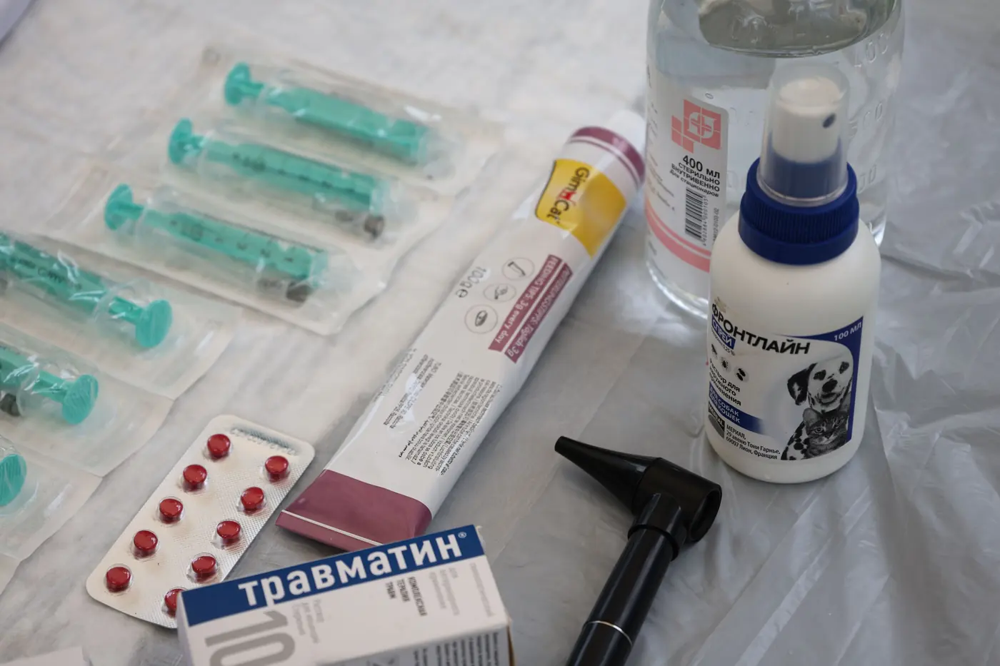
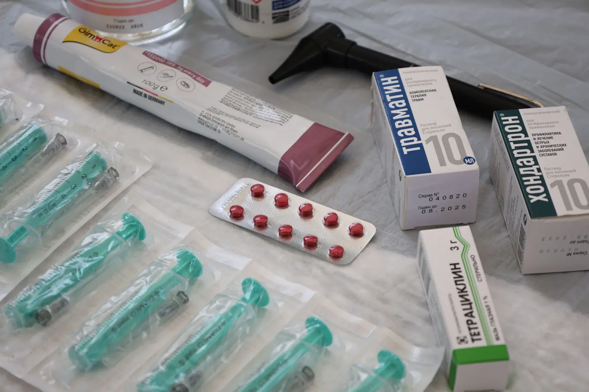

✓
New this week3 care guides published
Stackly / Blog
Clinic insights, not noise.
Patient-flow breakdowns, reminder fixes and follow-up guidance written by the care coordinators who actually run clinics with us every week.
Patient-flow breakdowns, reminder fixes and follow-up guidance written by the care coordinators who actually run clinics with us every week.



Adding appointment slots every week isn't a strategy — it's how a calm clinic turns into a crowded waiting room. Here's what actually keeps patients moving, week after week.
Read the article Reminders
RemindersNine times out of ten it isn't your patients — it's your reminder timing. A care coordinator's breakdown of the usual suspects and the fixes that work.
Read the article Patient Retention
Patient RetentionSkipping your health-score review doesn't save time. It makes your next follow-up riskier. Here's how we actually schedule them.
Read the article Lab & Reports
Lab & ReportsMost weekly targets fall apart on a busy Monday. Here's the version our clinics actually stick to for a full year.
Read the article Appointments
AppointmentsA look inside the care-cycle process every Stackly care coordinator uses, from first registration to the final review.
Read the article Reminders
RemindersYour software isn't the problem. Your record discipline is. A simple fix that keeps patient records accurate without adding headcount.
Read the article Patient Retention
Patient RetentionWe pulled the numbers from 200 patient check-ins. Scheduled health-score reviews predicted follow-up attendance better than anything else we track.
Read the articleTimestamp, patient and a clear next step, every visit, not a judgment call. Here's how we grade it and why it matters.
Read the article Lab & Reports
Lab & ReportsUnder-booking is the most common reason a clinic's growth stalls. Signs you're leaving appointment slots empty.
Read the articleLonger reads on what changes when a clinic stops guessing and starts following its own numbers.
Staggered slots, one confirmation call the evening before and a shared dashboard for the front desk. Here is the exact weekly routine, step by step, and what the care coordinator changed first.
Read the story Clinic Operations
Clinic OperationsAttendance, follow-up rate and average wait explained in plain language, plus the three reports every clinic lead should open before Monday morning rounds.
Read the storyEverything here is written for any clinic. A managed patient or clinic gets the same reasoning applied to their exact numbers, their exact visits, their exact week.
The most bookmarked post on the blog — why adding appointments blindly isn't a strategy.
Why slots, reminders and follow-ups must be planned together.
Our most-shared clinic-ops post — the reminder-timing mistake behind most no-shows.
Send reminders 24 hours and 2 hours before the visit, not once.
Data from 200 patient check-ins — the retention post that changes routines.
Patients with a weekly check-in return for follow-ups far more often.
The planning post we send to every clinic stuck on a growth plateau.
A simple buffer rule that keeps flu-season Mondays under control.
Our authors work with live clinics every week, so the advice on this blog comes from the visits, calls and dashboards they manage.
Writes about capacity planning, service-area design and cost per patient.
Writes about staff training, reminder design and patient flow.
Writes about data hygiene, patient privacy and compliance.
Writes about registration flow, visit logging and adoption tracking.
We publish one or two posts a week. Each one is reviewed by a care coordinator who has handled the situation it describes.
Yes. Send your question through the contact page or reply to the weekly newsletter. Topics that come up across several clinics usually become a post.
Blog posts are general. If you are a managed clinic, your care coordinator applies the same ideas to your own stages, volumes and appointment targets.
You can share links freely. If you want to republish a post in your own newsletter or intranet, contact us first and we will confirm the details.